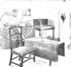
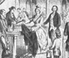
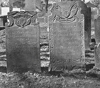
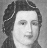

Collective Biographies of WomenAn Annotated Bibliography
Alison Booth
223.
Daughters of the American Revolution. Chapter Sketches: Patron Saints. Edited by Mary Philotheta Root. New Haven: Connecticut Chapter, DAR, 1901.
Search OCLC WorldCat for this title.
Search Google Books for this title.
Daughters of the American Revolution. Chapter Sketches: Patron Saints. Edited by Mary Philotheta Root. New Haven: Connecticut Chapter, DAR, 1901.
-
Mrs. Sara T. Kinney
-
The Girl, Faith Trumbull
-
Entrance to the Trumbull House
-
Interior of the War Office
-
Madame Faith Trumbull
-
The Trumbull Tombat Lebanon
-
Colonel George Wyllys
-
The Wyllys Mansion and the Charter Oak
-
The Ancient Burial Ground, Hartford
-
Charlotte Elderkin
-
 Eunice Dennie Burr
Eunice Dennie Burr -
Lucretia Shaw
-
General Wooster House
-
Corner Cupboard
-
Homeo of Elizabeth Porter Putnam
-
Mary Silliman
-
The Home of Mrs. Mary Silliman
-
Sarah Fuller Hull
-
 Jane Smith Phelps
Jane Smith Phelps -
Mary Floyd Tallmadge and Children
Search OCLC WorldCat for this title.
Search Google Books for this title.